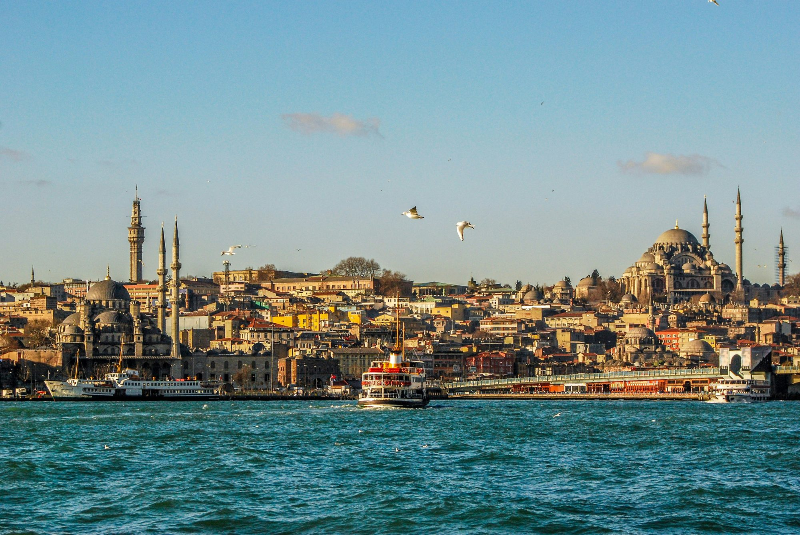
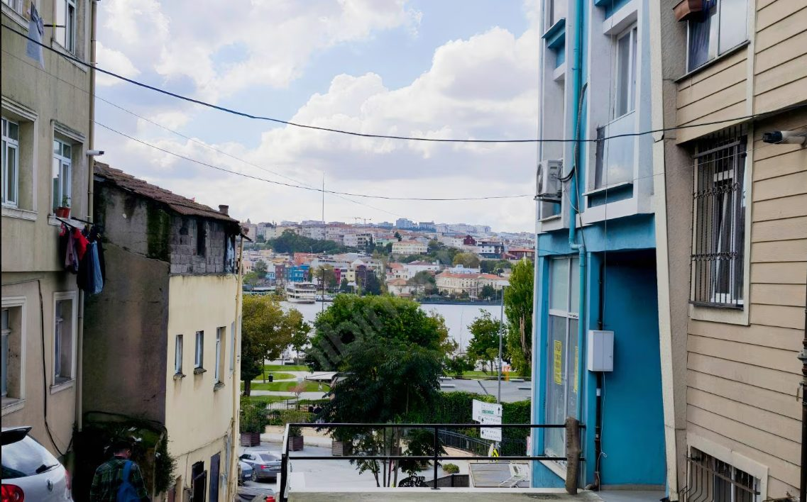
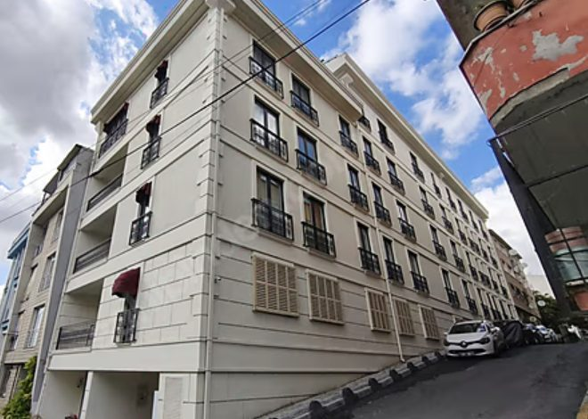
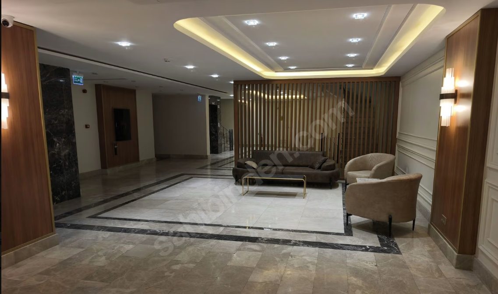
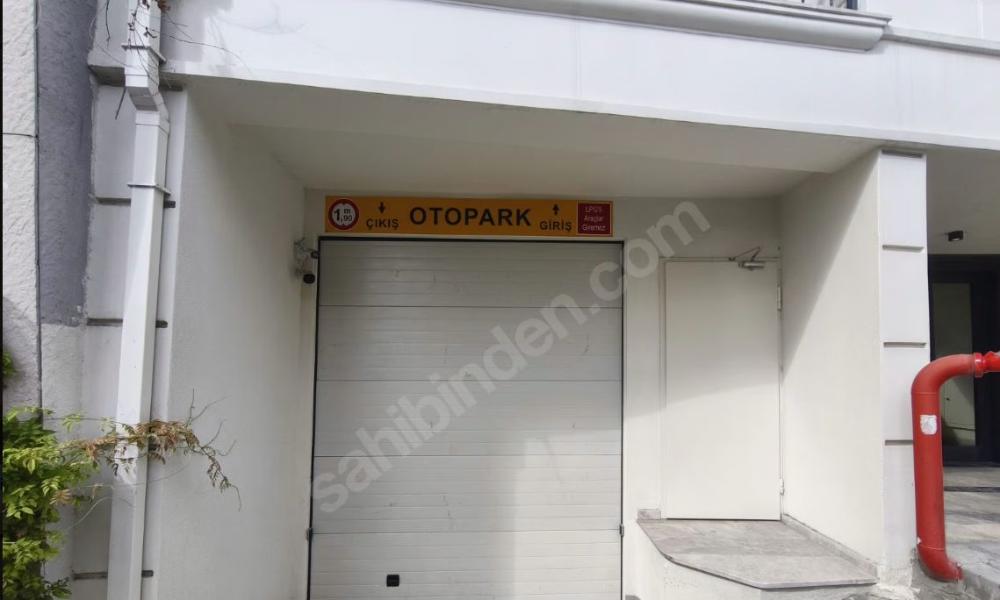

Choose language · Dil seçin · Sprache · Jezik

A two-year-old, fully furnished apartment in a marble-lobby building with garage parking. Move in with a suitcase.
Oak-look floors, marble-effect kitchen, rain shower, built-in wardrobes and air conditioning in both rooms. Tap any photo to enlarge.
One bedroom and a generous living room with an L-shaped sofa.

Keçeci Piri sits on the Beyoğlu side of the Golden Horn, between Kasımpaşa and the waterfront park. Quiet residential streets, with the city centre a short ride away.
The historic Ottoman imperial shipyard is being reborn as one of the city's most talked-about waterfront destinations, with a Rixos hotel, a marina, restaurants, shops and culture. From this apartment it is a two-minute walk.
View Tersane on Google MapsEvenings over the Golden Horn, Tersane two minutes away, everything ready the day you arrive. Send us a message for a viewing or more information.
Ask us on WhatsApp No obligationGolden Palace Haliç was completed in 2024: five floors, a marble lobby with a lounge, and a private car park below.



Viewings are arranged by RE/MAX Ekspres in Istanbul. Quote the listing number below when you get in touch.